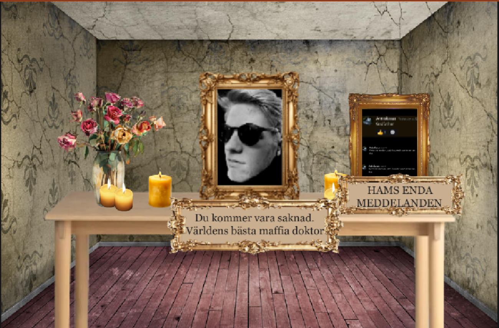

Quick Options
Gå bakåt
ENHANCED ANTON VIEW:
"Godfather"
"Har inte, slimey I presume, just to be sure I'm on the same page?"
"Viktor var medium, satt i haunted room innan han dog"
Use /Secret at red base
